帝国专员辖区
原页面：Reichskommissariats
This page details the countries created as Reichskommissariats; for the subject type, see 法西斯主义附庸国
帝国专员辖区 are special, releasable puppet states which can only be formed by the  德意志国 in controlled enemy territory, following the completion of the focus
德意志国 in controlled enemy territory, following the completion of the focus  Uplift the Rosenberg Office. They are created using decisions after conquering the relevant territory. Additional puppet states become available after completing the focuses
Uplift the Rosenberg Office. They are created using decisions after conquering the relevant territory. Additional puppet states become available after completing the focuses
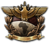
Mittelafrika,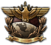
Establish Protectorates in America. All of the puppet states areList of Reichskommissariats
| 名称 | 首都 | German administrator | Collaborator | Controlled territory | National focus requirement |
|---|---|---|---|---|---|
| Prag (Prague) | Konstantin von Neurath / Johannes Blaskowitz | 亚罗斯拉夫·克雷奇 | 捷克斯洛伐克 | ||
| Krakau (Kraków) | Hans Frank | Boleslaw Piasecki | Southeastern Poland | ||
| Cusco | Christian Louis of Mecklenburg / Rolf Carls | Óscar Benavides / Jorge González von Marées | Southwestern South America | Establish Protectorates in America | |
| 巴格达 | Robert Tobler / Walter Model | 拉希德·阿里·盖拉尼 | The Middle East | ||
| Lae | Pavel Bermondt-Avalov / Werner von Fritsch | 埃里克·坎贝尔 | Southeast Asia and Oceania | ||
| Agram (Zagreb) | Friedrich Franz of Mecklenburg-Schwerin / Georg-Hans Reinhardt | Ante Pavelić | The Balkans | ||
| 布鲁塞尔 | Josef Grohé | 莱昂·德格雷勒 | Belgium and Calais | ||
| London | Philipp, Landgrave of Hesse / Otto Strasser | 奥斯瓦尔德·莫斯利 | The British Isles | ||
| 德里 | Philipp Albrecht of Württemberg / Alfred Saalwächter | 维纳耶克·达莫德尔·萨瓦尔卡 | South Asia | ||
| 马德里 | Walter Warlimont | 埃米利奥·莫拉 | Iberia and Basque Country | ||
| Tiflis (Tbilisi) | Arno Schickedanz | 沙尔瓦·马格拉凯利泽 | Caucasia | ||
| Maracaibo | Adolf Friedrich of Mecklenburg | 普利尼奥·萨尔加多 | Northeastern South America | Establish Protectorates in America | |
| Willhemstad (Curaçao) | Georg of Saxony / Günther Lütjens | 萨尔瓦多·阿巴斯卡尔 | Southern North America, Central America, the Caribbean | Establish Protectorates in America | |
| Dar es Salaam | Heinrich Schnee | D.F. Malan | Central and southern Africa | Mittelafrika | |
| Moskau (Moscow) | Siegfried Kasche | 康斯坦丁·罗扎耶夫斯基 | Most of Russia | ||
| Amsterdam | Arthur Seyss-Inquart / Edmund Glaise-Horstenau | 安东·米塞特 | The Netherlands | ||
| Tunis | Theodor Seitz | N/A | Northern Africa | Mittelafrika | |
| Chicago | Franz Anton Basch / Alfred Jodl | 威廉·达德利·佩利 | Northern North America | Establish Protectorates in America | |
| Oslo | 约瑟夫·特博文 | 维德孔·吉斯林 | 挪威 | ||
| 青岛 | 弗朗茨·里特尔·冯·埃普 | 汪精卫 | East Asia | ||
| Minsk | Hinrich Lohse | Radasłaŭ Astroŭski | The Baltics and western Belarus | ||
| 塔什干 | Friedrich Schulz / Hasso von Manteuffel | Veli Kayum-Khan | Central Asia | ||
| Kiev | Erich Koch | Mykhailo Pavlenko | Ukraine and Moldova | ||
| Samara | Rüdiger von der Goltz / Friedrich Paulus | N/A | Southern Urals | ||
国策

通用国策树。
- 主条目：通用国策树
All Reichskommissariats use the generic national focus tree.
国家精神
All  帝国专员辖区, with the exception of the
帝国专员辖区, with the exception of the  波希米亚和摩拉维亚保护国 and the
波希米亚和摩拉维亚保护国 and the  Generalgouvernement, start with the national spirit Reichskommissariat Zivilverwaltung, the effects of which depend on whether the Reichskommissar is a German or a local collaborator.
Generalgouvernement, start with the national spirit Reichskommissariat Zivilverwaltung, the effects of which depend on whether the Reichskommissar is a German or a local collaborator.
科技
All Reichskommissariats start with three research slots and inherit all technologies from  德国.
德国.
政治
All Reichskommissariats begin as  法西斯主义 puppet states of
法西斯主义 puppet states of  德国 with a
德国 with a  法西斯主义 popularity of 60%. They get advisors and military staff of local origin. All territory under their control are occupied territory, they do not have any cores.
法西斯主义 popularity of 60%. They get advisors and military staff of local origin. All territory under their control are occupied territory, they do not have any cores.
军事
All Reichskommissariats start with no starting army, navy, or air force. They inherit all division templates from  德国. Additionally, they start with two division templates: Militärpolizei and Berittene Militärpolizei (6 Infantry/Cavalry battalions with a Military Police company) in order to combat resistance in their territories.
德国. Additionally, they start with two division templates: Militärpolizei and Berittene Militärpolizei (6 Infantry/Cavalry battalions with a Military Police company) in order to combat resistance in their territories.
| 师 | 名称列表 | 支援连 | 战斗营 |
|---|---|---|---|
| 骑兵师 | 6x | ||
| 步兵师 | 6x |
Alfred Rosenberg
After completing the focus  Uplift the Rosenberg Office, the
Uplift the Rosenberg Office, the  德意志国 gets access to a special dynamic modifier in the decisions tab: Alfred Rosenberg, which gives certain bonuses. Each time a new Reichskommissariat is formed, Rosenberg's effects increase, up to a maximum of 10 Reichskommissariats has been created.
德意志国 gets access to a special dynamic modifier in the decisions tab: Alfred Rosenberg, which gives certain bonuses. Each time a new Reichskommissariat is formed, Rosenberg's effects increase, up to a maximum of 10 Reichskommissariats has been created.
| 肖像 | 名称 | Starting effects | Maximum effects |
|---|---|---|---|
| Alfred Rosenberg |
波希米亚和摩拉维亚保护国
- 主条目：Protektorat Böhmen-Mähren
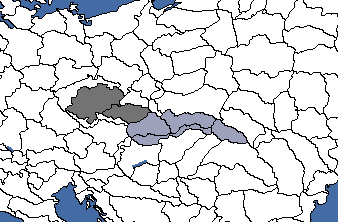
波希米亚-摩拉维亚保护国所需州份地图。灰蓝色代表「斯洛伐克的命运」决议。
The 波希米亚和摩拉维亚保护国 was historically created in 1939 following the German occupation of Czechoslovakia, and was headed by Konstantin von Neurath, and later Wilhelm Frick, until its disestablishment in 1945. It can be created by the  德意志国 if it or its subjects control the
德意志国 if it or its subjects control the  Czechoslovakian states of 波希米亚 (9), and 摩拉维亚 (75). It can be expanded to also include
Czechoslovakian states of 波希米亚 (9), and 摩拉维亚 (75). It can be expanded to also include  斯洛伐克.
斯洛伐克.
Since  我们时代的和平, the protectorate is formed via the
我们时代的和平, the protectorate is formed via the  捷克斯洛伐克 focus
捷克斯洛伐克 focus  Complete Capitulation
Complete Capitulation
| 意识形态 | 国家名称 |
|---|---|
| 肖像 | 名称 | 特质 | 效果 | 可用 |
|---|---|---|---|---|
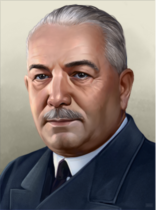 |
康斯坦丁·冯·纽赖特 | Reichsprotektor | 如果已完成「重整国防军」焦点。
| |

|
约翰内斯·布拉斯科维茨 |
If focus | ||
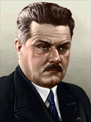 |
亚罗斯拉夫·克雷奇 | 如果
|
Generalgouvernement
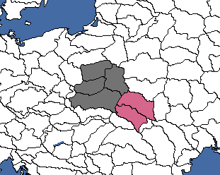
总督府所需州份地图。粉色代表「扩大总督府行政区」决议。
The Generalgouvernement was historically created in 1939 following the German invasion of Poland, and was headed by Hans Frank until its disestablishment in 1945. It can be created by the  德意志国 if it or its subjects control the
德意志国 if it or its subjects control the  Polish states of 华沙 (10), Kielce (90), Lublin (92)和克拉科夫 (88). It can be expanded via a decision to also include the states of 斯坦尼斯瓦沃夫 (89)和利沃夫 (91).
Polish states of 华沙 (10), Kielce (90), Lublin (92)和克拉科夫 (88). It can be expanded via a decision to also include the states of 斯坦尼斯瓦沃夫 (89)和利沃夫 (91).
| 意识形态 | 国家名称 |
|---|---|
| 肖像 | 名称 | 特质 | 效果 | 可用 |
|---|---|---|---|---|
| Hans Frank | 总督 | Always | ||

|
Boleslaw Piasecki | Unruly Falangist Marionette |
|
If |
Reichskommissariat Anden
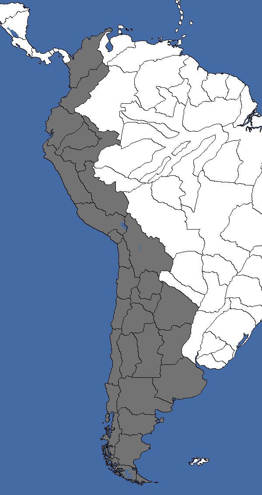
安第斯帝国专员区所需州份地图。
The Reichskommissariat Anden is an hypothetical reichskommissariat stretching across the Andes Mountains. It can be formed by the  德意志国 if it or its subjects control western
德意志国 if it or its subjects control western  哥伦比亚,
哥伦比亚,  厄瓜多尔,
厄瓜多尔,  秘鲁, western
秘鲁, western  玻利维亚,
玻利维亚,  智利 and most of
智利 and most of  阿根廷.
阿根廷.
| 意识形态 | 国家名称 |
|---|---|
| 肖像 | 名称 | 特质 | 效果 | 可用 |
|---|---|---|---|---|

|
Christian Louis of Mecklenburg | Reichskommissar | If | |

|
罗尔夫·卡尔斯 | If Christian Louis of Mecklenburg is not available. | ||
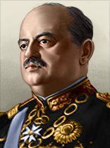 |
奥斯卡·贝纳维德斯 | If | ||

|
豪尔赫·冈萨雷斯·冯·马雷斯 | If 奥斯卡·贝纳维德斯 is not available. |
Reichskommissariat Arabien
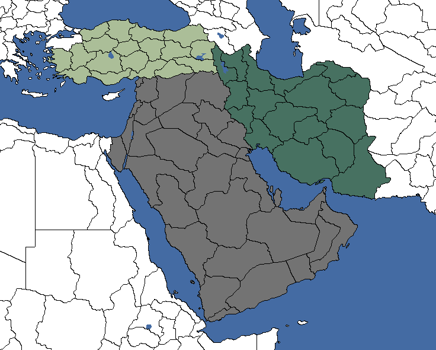
阿拉伯帝国专员区所需州份地图。浅绿色和深绿色分别代表「将土耳其行政区划归阿拉伯」和「将伊朗行政区划归阿拉伯」决议。
The Reichskommissariat Arabien is a hypothetical Reichskommissariat encompassing the Middle East. It can be formed by the  德意志国 if it or its subjects control
德意志国 if it or its subjects control  叙利亚,
叙利亚,  黎巴嫩,
黎巴嫩,  伊拉克,
伊拉克,  巴勒斯坦,
巴勒斯坦,  约旦, 西奈 (453) and all of the Arabian Peninsula. It can be expanded further via decisions to also include all of
约旦, 西奈 (453) and all of the Arabian Peninsula. It can be expanded further via decisions to also include all of  伊朗和
伊朗和 土耳其, except the states of 布尔萨 (340), 埃迪尔内 (341)和伊斯坦布尔 (797).
土耳其, except the states of 布尔萨 (340), 埃迪尔内 (341)和伊斯坦布尔 (797).
| 意识形态 | 国家名称 |
|---|---|
| 肖像 | 名称 | 特质 | 效果 | 可用 |
|---|---|---|---|---|

|
罗伯特·托布勒 | Reichskommissar | ||

|
瓦尔特·莫德尔 | If 罗伯特·托布勒 is not available. | ||

|
拉希德·阿里·盖拉尼 | If |
帝国专员区 澳大拉西亚
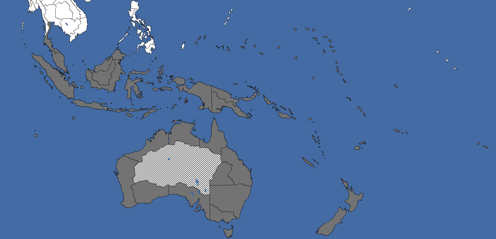
澳大拉西亚帝国专员区所需州份地图。棋盘格图案表示无法通行的州，这些州并非决议所需，会自动转移。
The 帝国专员区 澳大拉西亚 is a hypothetical Reichskommissariat encompassing Oceania. It can be formed by the  德意志国 if it or its subjects control Malaysia,
德意志国 if it or its subjects control Malaysia,  Indonesia,
Indonesia,  澳大利亚,
澳大利亚,  新西兰, 暹罗南部 (724), 葡属帝汶 (721) and most South Pacific islands except 帕劳 (647).
新西兰, 暹罗南部 (724), 葡属帝汶 (721) and most South Pacific islands except 帕劳 (647).
| 意识形态 | 国家名称 |
|---|---|
| 肖像 | 名称 | 特质 | 效果 | 可用 |
|---|---|---|---|---|

|
帕维尔·别尔蒙特-阿瓦洛夫 | Reichskommissar | If | |

|
维尔纳·冯·弗里奇 | If 帕维尔·别尔蒙特-阿瓦洛夫 is not available. | ||

|
埃里克·坎贝尔 | If |
Reichskommissariat Balkan
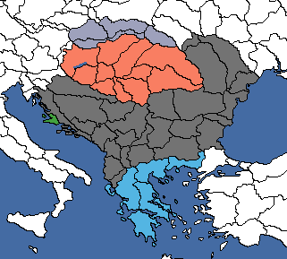
巴尔干帝国专员区所需州份地图。绿色、浅蓝色、红色和灰蓝色分别代表「扩大巴尔干行政区」、「将希腊行政区划归巴尔干帝国专员区」、「将匈牙利行政区划归巴尔干帝国专员区」和「斯洛伐克的命运」决议。
The Reichskommissariat Balkan is a hypothetical Reichskommissariat encompassing the Balkans. It can be created by the  德意志国 if it or its subjects control most of
德意志国 if it or its subjects control most of  南斯拉夫和
南斯拉夫和 罗马尼亚,
罗马尼亚,  阿尔巴尼亚和
阿尔巴尼亚和 保加利亚. It can be further expanded via decisions to also include 扎拉 (163),
保加利亚. It can be further expanded via decisions to also include 扎拉 (163),  匈牙利,
匈牙利,  特兰西瓦尼亚, 巴奇卡 (45) 巴纳特 (82), Katowice (762),
特兰西瓦尼亚, 巴奇卡 (45) 巴纳特 (82), Katowice (762),  斯洛伐克, as well as most of
斯洛伐克, as well as most of  希腊 (not 克里特 (182) or the 爱琴群岛 (187)).
希腊 (not 克里特 (182) or the 爱琴群岛 (187)).
| 意识形态 | 国家名称 |
|---|---|
| 肖像 | 名称 | 特质 | 效果 | 可用 |
|---|---|---|---|---|

|
梅克伦堡-什未林的弗里德里希·弗朗茨 | Reichskommissar | If | |

|
格奥尔格-汉斯·莱因哈特 | If 梅克伦堡-什未林的弗里德里希·弗朗茨 is not available. | ||

|
Ante Pavelić | If |

Reichskommissariat Belgien-Nordfrankreich
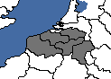
比利时-北法兰西帝国专员区所需州份地图。
The Reichskommissariat Belgien-Nordfrankreich was historically created in 1944, replacing an earlier military government which was created following the German invasion of the Belgium, and was headed by Josef Grohé until its disestablishment later the same year. It can be by created the  德意志国 if it or its subjects control all of mainland
德意志国 if it or its subjects control all of mainland  比利时 and the
比利时 and the  法国 state of Nord-Pas-de-Calais (29).
法国 state of Nord-Pas-de-Calais (29).
| 意识形态 | 国家名称 |
|---|---|
| 肖像 | 名称 | 特质 | 效果 | 可用 |
|---|---|---|---|---|
| Josef Grohé | Reichskommissar | Always | ||

|
莱昂·德格雷勒 | 比利时审判官 |
|
|

|
莱昂·德格雷勒 | – | – |
Reichskommissariat Großbritannien
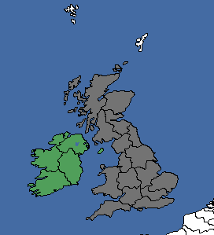
大不列颠帝国专员区所需州份地图。绿色代表「将爱尔兰行政区划归大不列颠帝国专员区」决议。
The Reichskommissariat Großbritannien is a hypothetical Reichskommissariat encompassing most of the British Isles. It can be created by the  德意志国 if it or its subjects control most of
德意志国 if it or its subjects control most of  大不列颠. It can be expanded via decision to also include
大不列颠. It can be expanded via decision to also include  爱尔兰, 北爱尔兰 (119) and the Isle of Man (932).
爱尔兰, 北爱尔兰 (119) and the Isle of Man (932).
| 意识形态 | 国家名称 |
|---|---|
| 肖像 | 名称 | 特质 | 效果 | 可用 |
|---|---|---|---|---|

|
Philipp, Landgrave of Hesse | Reichskommissar | If | |

|
奥托·施特拉塞尔 | If Philipp, Landgrave of Hesse is not available. | ||

|
奥斯瓦尔德·莫斯利 | If |
Reichskommissariat Hindustan
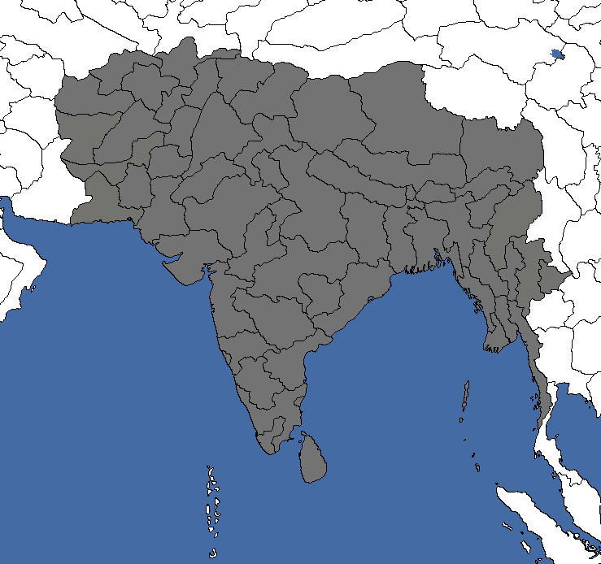
印度斯坦帝国专员区所需州份地图。
The Reichskommissariat Hindustan is a hypothetical Reichskommissariat encompassing most of South Asia. It can be created by the  德意志国 if it or its subjects control the
德意志国 if it or its subjects control the  英属印度,
英属印度,  Burma,
Burma,  阿富汗,
阿富汗,  西藏,
西藏,  尼泊尔,
尼泊尔,  不丹,
不丹,  斯里兰卡和Andaman (733).
斯里兰卡和Andaman (733).
| 意识形态 | 国家名称 |
|---|---|
| 肖像 | 名称 | 特质 | 效果 | 可用 |
|---|---|---|---|---|

|
Philipp Albrecht of Württemberg | Reichskommissar | If | |

|
阿尔弗雷德·萨尔韦希特 | If Philipp Albrecht of Württemberg is not available. | ||
| 维纳耶克·达莫德尔·萨瓦尔卡 | If |
Reichskommissariat Iberien
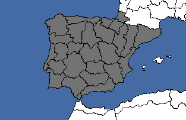
伊比利亚帝国专员区所需州份地图。
The Reichskommissariat Iberien is a hypothetical Reichskommissariat encompassing Iberia. It can be created by the  德意志国 if it or its subjects control mainland
德意志国 if it or its subjects control mainland  葡萄牙和
葡萄牙和 西班牙, including 直布罗陀 (118), as well as
西班牙, including 直布罗陀 (118), as well as  巴斯克地区.
巴斯克地区.
| 意识形态 | 国家名称 |
|---|---|
| 肖像 | 名称 | 特质 | 效果 | 可用 |
|---|---|---|---|---|
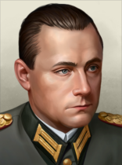 |
Walter Warlimont | Reichskommissar | Always | |

|
埃米利奥·莫拉 | If |
Reichskommissariat Kaukasien
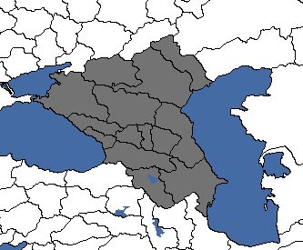
高加索帝国专员区所需州份地图。
The Reichskommissariat Kaukasien was an historically proposed Reichskommissariat which was never formed. It can be created by the  德意志国 if it or its subjects control the entire
德意志国 if it or its subjects control the entire  Russian Caucasus and Kuban regions, including, but not limited to
Russian Caucasus and Kuban regions, including, but not limited to  佐治亚,
佐治亚,  亚美尼亚和
亚美尼亚和 阿塞拜疆.
阿塞拜疆.
| 意识形态 | 国家名称 |
|---|---|
| 肖像 | 名称 | 特质 | 效果 | 可用 |
|---|---|---|---|---|
| Arno Schickedanz | Reichskommissar | Always | ||

|
沙尔瓦·马格拉凯利泽 | If |
Reichskommissariat Klein-Venedig
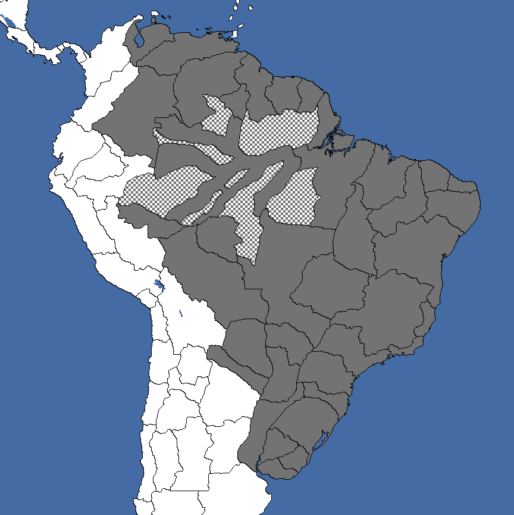
小威尼斯帝国专员区所需州份地图。棋盘格图案表示无法通行的州，这些州并非决议所需，会自动转移。
The Reichskommissariat Klein-Venedig is a hypothetical Reichskommissariat encompassing eastern South America. It can be created by the  德意志国 if it or its subjects control
德意志国 if it or its subjects control  巴西,
巴西,  乌拉圭,
乌拉圭,  巴拉圭,
巴拉圭,  委内瑞拉, eastern
委内瑞拉, eastern  哥伦比亚和
哥伦比亚和 玻利维亚, the Guianas, and small parts of
玻利维亚, the Guianas, and small parts of  阿根廷.
阿根廷.
| 意识形态 | 国家名称 |
|---|---|
| 肖像 | 名称 | 特质 | 效果 | 可用 |
|---|---|---|---|---|
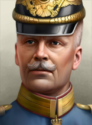 |
Adolf Friedrich of Mecklenburg | Reichskommissar | Always | |
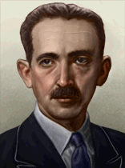 |
普利尼奥·萨尔加多 | If |
Reichskommissariat Kolumbus
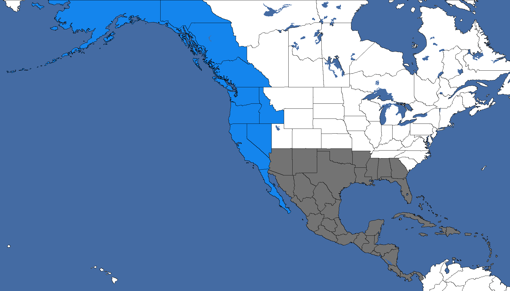
哥伦布帝国专员区所需州份地图。蓝色代表「西海岸美洲的命运」决议。
The Reichskommissariat Kolumbus is a hypothetical Reichskommissariat encompassing northern Latin America. It can be created by the  德意志国 if it or its subjects control most of
德意志国 if it or its subjects control most of  墨西哥, southeastern
墨西哥, southeastern  美国, and all of Central America and the Caribbean. It can be expanded using decision to also include the the American West Coast.
美国, and all of Central America and the Caribbean. It can be expanded using decision to also include the the American West Coast.
| 意识形态 | 国家名称 |
|---|---|
| 肖像 | 名称 | 特质 | 效果 | 可用 |
|---|---|---|---|---|

|
Georg of Saxony | Reichskommissar | If | |

|
京特·吕特晏斯 | If Georg of Saxony is not available. | ||
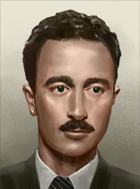 |
萨尔瓦多·阿巴斯卡尔 | If |
Reichskommissariat Mittelafrika
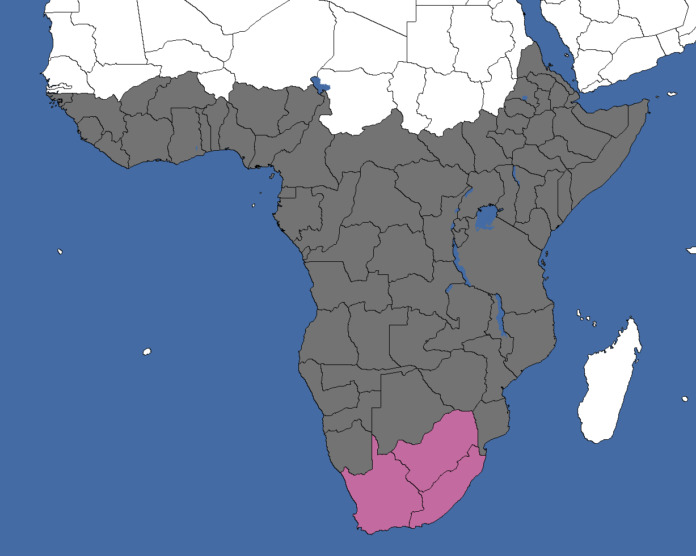
中非帝国专员区所需州份地图。洋红色代表「将南非行政区划归中非帝国专员区」决议。
The Reichskommissariat Mittelafrika is a hypothetical Reichskommissariat in Africa. It can be created by the  德意志国 if it or its subjects control central and southern Africa. It can be expanded via decision to also include
德意志国 if it or its subjects control central and southern Africa. It can be expanded via decision to also include  南非.
南非.
| 意识形态 | 国家名称 |
|---|---|
| 肖像 | 名称 | 特质 | 效果 | 可用 |
|---|---|---|---|---|
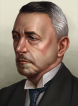 |
Heinrich Schnee | Reichskommissar | Always | |

|
D.F. Malan | If |
Reichskommissariat Moskowien
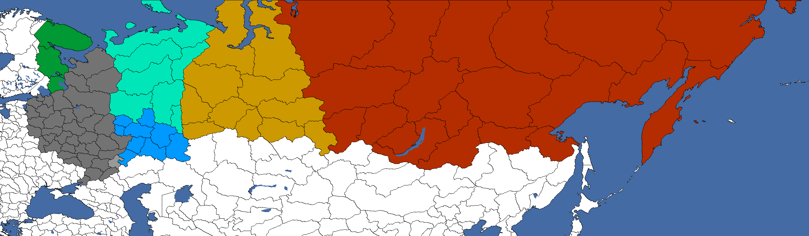
莫斯科维亚帝国专员区所需州份地图。浅灰色、绿色、蓝色、青绿色、橙色和红色分别代表「伏尔加德意志殖民地的命运」、「卡累利阿的命运」、「南乌拉尔地区的命运」、「将北乌拉尔行政区划归莫斯科维亚」、「将西叶尼塞行政区划归莫斯科维亚」和「将东叶尼塞行政区划归莫斯科维亚」决议。
The Reichskommissariat Moskowien was an historically proposed Reichskommissariat which was never formed. It can be created by the  德意志国 if it or its subjects control most of European
德意志国 if it or its subjects control most of European  Russia. It can be expanded further via decisions to include almost all
Russia. It can be expanded further via decisions to include almost all  苏联 territory. The state of Engels-Marxstadt (829) can alternatively be made into a
苏联 territory. The state of Engels-Marxstadt (829) can alternatively be made into a  德国 core.
德国 core.
| 意识形态 | 国家名称 |
|---|---|
| 肖像 | 名称 | 特质 | 效果 | 可用 |
|---|---|---|---|---|
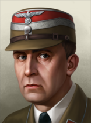 |
Siegfried Kasche | Reichskommissar | Always | |

|
康斯坦丁·罗扎耶夫斯基 | If |
Reichskommissariat Niederlande
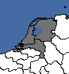
尼德兰帝国专员区所需州份地图。
The Reichskommissariat Niederlande was historically created in 1940 following the German invasion of the Netherlands and was headed by Arthur Seyss-Inquart until its disestablishment in 1945. It can be created by the  德意志国 if it or its subjects control all of the mainland
德意志国 if it or its subjects control all of the mainland  荷兰.
荷兰.
| 意识形态 | 国家名称 |
|---|---|
| 肖像 | 名称 | 特质 | 效果 | 可用 |
|---|---|---|---|---|

|
阿图尔·赛斯-英夸特 | Reichskommissar | If | |

|
Edmund Glaise-Horstenau | If 阿图尔·赛斯-英夸特 is not available. | ||

|
安东·米塞特 | Leider |
|
If |
Reichskommissariat Nordafrika
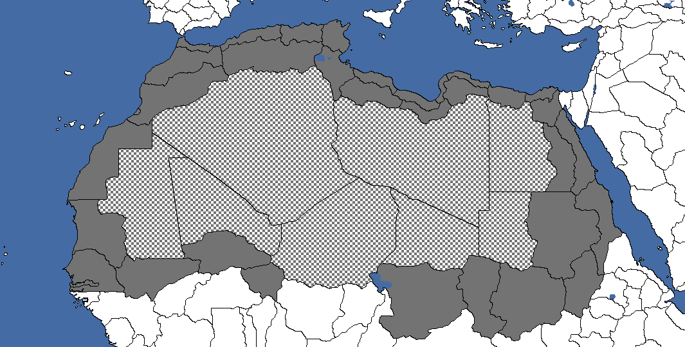
北非帝国专员区所需州份地图。棋盘格图案表示无法通行的州，这些州并非决议所需，会自动转移。
The Reichskommissariat Nordafrika is a hypothetical Reichskommissariat in Africa. It can be created by the  德意志国 if it or its subjects control northern Africa.
德意志国 if it or its subjects control northern Africa.
| 意识形态 | 国家名称 |
|---|---|
| 肖像 | 名称 | 特质 | 效果 | 可用 |
|---|---|---|---|---|
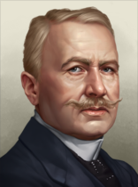 |
Theodor Seitz | Reichskommissar | Always |
Reichskommissariat Nordamerika
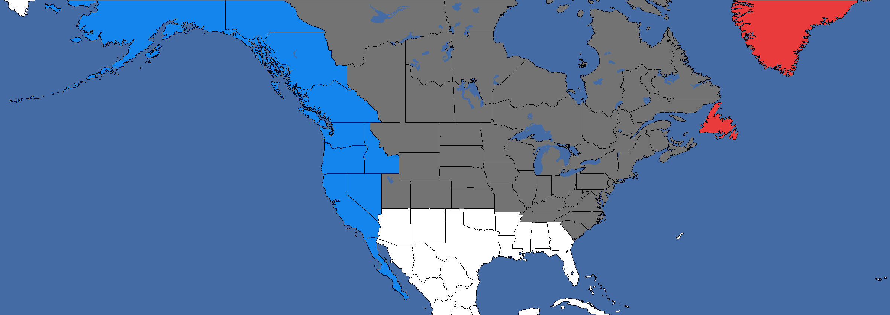
北方美洲帝国专员区所需州份地图。红色和蓝色分别代表「扩大北方美洲行政区」和「西海岸美洲的命运」决议。
The Reichskommissariat Nordamerika is a hypothetical Reichskommissariat in North America. It can be created by the  德意志国 if it or its subjects most of
德意志国 if it or its subjects most of  加拿大 and the
加拿大 and the  美国. It can be expanded via decisions to also include the American West Coast and 纽芬兰 (331)和格陵兰 (101).
美国. It can be expanded via decisions to also include the American West Coast and 纽芬兰 (331)和格陵兰 (101).
| 意识形态 | 国家名称 |
|---|---|
| 肖像 | 名称 | 特质 | 效果 | 可用 |
|---|---|---|---|---|

|
Franz Anton Basch | Reichskommissar | If | |

|
阿尔弗雷德·约德尔 | If Franz Anton Basch is not available. | ||

|
威廉·达德利·佩利 | If |
Reichskommissariat Norwegen
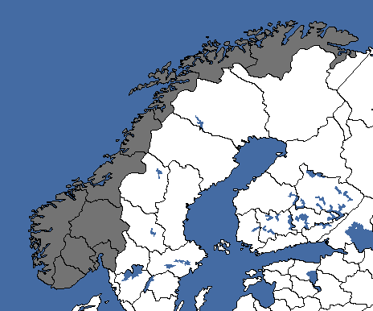
挪威帝国专员区所需州份地图。
The Reichskommissariat Norwegen was historically created in 1940 following the German invasion of Norway and was headed by Josef Terboven until its disestablishment in 1945. It can be created by the  德意志国 if it or its subjects control all of mainland
德意志国 if it or its subjects control all of mainland  挪威.
挪威.
| 意识形态 | 国家名称 |
|---|---|
| 肖像 | 名称 | 特质 | 效果 | 可用 |
|---|---|---|---|---|

|
约瑟夫·特博文 | 冷酷的行政官员 |
|
If 约瑟夫·特博文 is 不 the country leader of |

|
维德孔·吉斯林 | 法西斯走狗 |
|
If 维德孔·吉斯林 is 不 the country leader of |
Reichskommissariat Ostasien
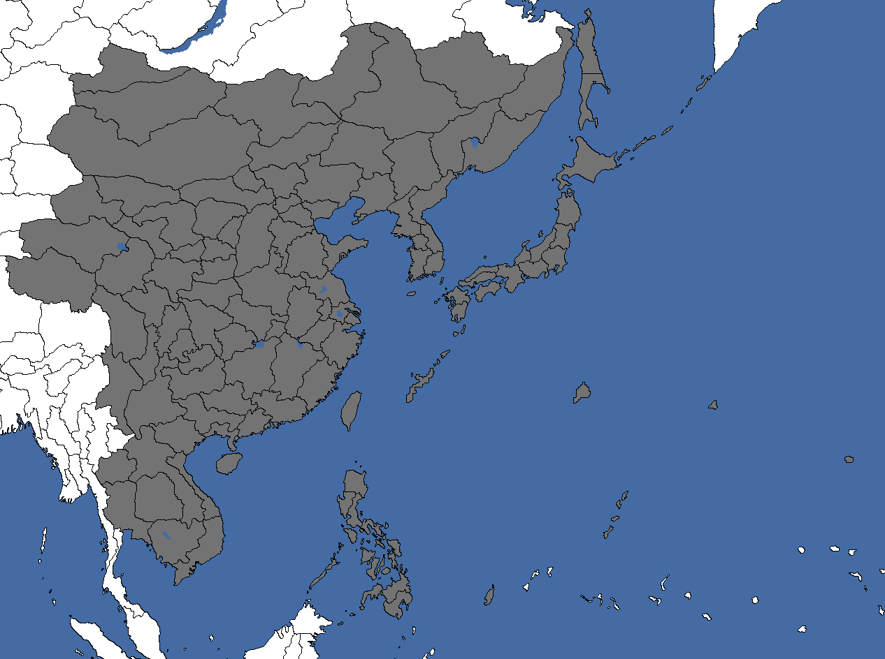
东亚帝国专员区所需州份地图。
The Reichskommissariat Ostasien is a hypothetical Reichskommissariat encompassing most of East Asia. It can be created by the  德意志国 if it or its subjects control
德意志国 if it or its subjects control  中国,
中国,  日本,
日本,  Korea, the
Korea, the  菲律宾,
菲律宾,  暹罗,
暹罗,  Vietnam,
Vietnam,  Laos和
Laos和 柬埔寨, most of
柬埔寨, most of  蒙古, as well as 北萨哈林 (655), 帕劳 (647)和塞班 (646).
蒙古, as well as 北萨哈林 (655), 帕劳 (647)和塞班 (646).
| 意识形态 | 国家名称 |
|---|---|
| 肖像 | 名称 | 特质 | 效果 | 可用 |
|---|---|---|---|---|

|
弗朗茨·里特尔·冯·埃普 | Reichskommissar | Always | |

|
汪精卫 | If |
Reichskommissariat Ostland
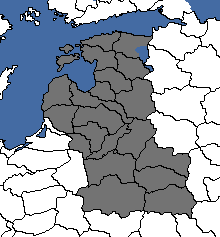
东方地区帝国专员区所需州份地图。
The Reichskommissariat Ostland was historically created in 1941 following the German invasion of the Soviet Union and was headed by Hinrich Lohse, and later Erich Koch, until its disestablishment in 1945. It can be created by the  德意志国 if it or its subjects control all of
德意志国 if it or its subjects control all of  爱沙尼亚,
爱沙尼亚,  拉脱维亚,
拉脱维亚,  立陶宛 and most of
立陶宛 and most of  白俄罗斯.
白俄罗斯.
| 意识形态 | 国家名称 |
|---|---|
| 肖像 | 名称 | 特质 | 效果 | 可用 |
|---|---|---|---|---|
| Hinrich Lohse | Reichskommissar | Always | ||

|
Radasłaŭ Astroŭski | If |
Reichskommissariat Turkestan
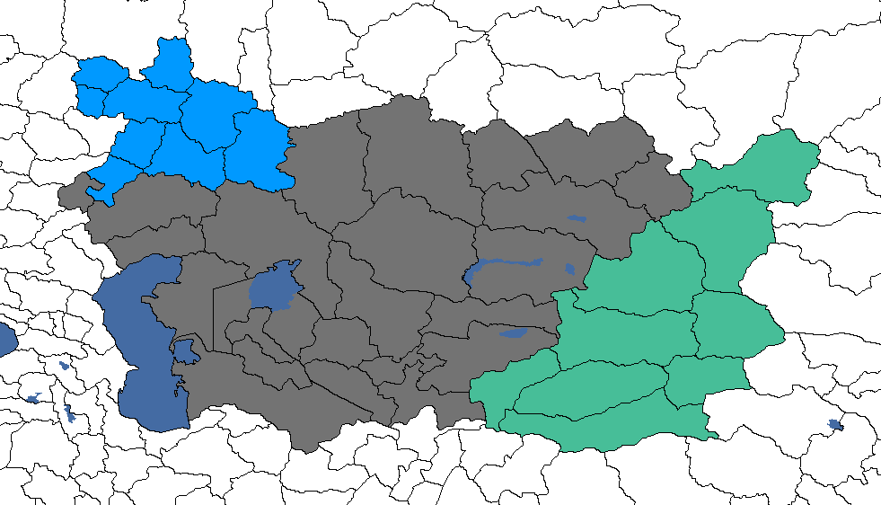
突厥斯坦帝国专员区所需州份地图。蓝色和青绿色分别代表「南乌拉尔地区的命运」和「将东突厥斯坦行政区划归突厥斯坦」决议。
The Reichskommissariat Turkestan was an historically proposed Reichskommissariat which was never formed. It can created by the  德意志国 if it or its subjects control all of
德意志国 if it or its subjects control all of  Kazakhstan,
Kazakhstan,  Uzbekistan,
Uzbekistan,  Kyrgyzstan,
Kyrgyzstan,  Turkmenistan,
Turkmenistan,  Tajikistan和
Tajikistan和 Altai. It can be expanded further via decisions to also include the South Urals, and East Turkestan (
Altai. It can be expanded further via decisions to also include the South Urals, and East Turkestan ( 新疆,
新疆,  唐努乌梁海 and western
唐努乌梁海 and western  蒙古).
蒙古).
| 意识形态 | 国家名称 |
|---|---|
| 肖像 | 名称 | 特质 | 效果 | 可用 |
|---|---|---|---|---|

|
弗里德里希·舒尔茨 | Reichskommissar | If focus | |

|
哈索·冯·曼陀菲尔 | If focus | ||
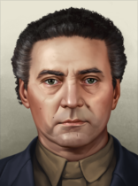 |
Veli Kayum-Khan | Always |
Reichskommissariat Ukraine
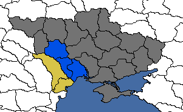
乌克兰帝国专员区所需州份地图。蓝色和黄色分别代表「扩大乌克兰行政区」和「进一步扩大乌克兰行政区」决议。
The Reichskommissariat Ukraine was historically created in 1941 following the German invasion of the Soviet Union and was headed by Erich Koch until its disestablishment in 1944. It can be created by the  德意志国 if it or its subjects control most of
德意志国 if it or its subjects control most of  乌克兰. It can be expanded via decisions to also include the rest of Ukraine, as well as
乌克兰. It can be expanded via decisions to also include the rest of Ukraine, as well as  摩尔多瓦.
摩尔多瓦.
| 意识形态 | 国家名称 |
|---|---|
| 肖像 | 名称 | 特质 | 效果 | 可用 |
|---|---|---|---|---|
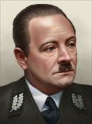 |
Erich Koch | Reichskommissar | Always | |

|
Mykhailo Pavlenko | If |
Reichskommissariat Ural
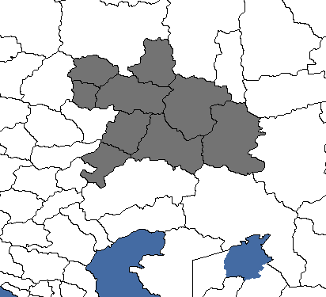
乌拉尔帝国专员区所需州份地图。
The Reichskommissariat Ural is a hypothetical Reichskommissariat encompassing the South Ural region. It can be created by the  德意志国 if it or its subjects control
德意志国 if it or its subjects control  楚瓦什,
楚瓦什,  马里埃尔,
马里埃尔,  Tatarstan,
Tatarstan,  乌德穆尔特,
乌德穆尔特,  Bashkortostan, as well as Kuybyshev (251), Balakovo (401), Orenburg (652)和Magnitogorsk (582).
Bashkortostan, as well as Kuybyshev (251), Balakovo (401), Orenburg (652)和Magnitogorsk (582).
| 意识形态 | 国家名称 |
|---|---|
| 肖像 | 名称 | 特质 | 效果 | 可用 |
|---|---|---|---|---|

|
Rüdiger von der Goltz | Reichskommissar | If | |

|
弗里德里希·保卢斯 | If Rüdiger von der Goltz is not available. |
| 美洲原住民国家 |
| 帝国专员辖区 |
|
| Miscellaneous |
|
| Unavailable |
模板：Country navbox/Europe
模板：Country navbox/Americas
模板：Country navbox/Asia
模板：Country navbox/Africa